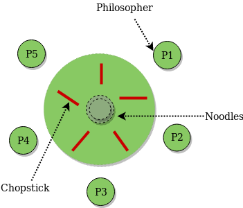

D INING PHILOSOPHER:
The Dining Philosopher Problem states that K philosophers seated around a circular table with one chopstick between each pair of philosophers. There is one chopstick between each philosopher. A philosopher may eat if he can pick up the two chopsticks adjacent to him. One chopstick may be picked up by any one of its adjacent followers but not both.

There are three states of the philosopher: THINKING, HUNGRY, and EATING. Here there are two semaphores: Mutex and a semaphore array for the philosophers. Mutex is used such that no two philosophers may access the pickup or putdown at the same time. The array is used to control the behavior of each philosopher. But, semaphores can result in deadlock due to programming errors.
Semaphore Solution to Dining Philosopher: –
Each philosopher is represented by the following pseudocode:
process P[i]
while true do
{ THINK;
PICKUP(CHOPSTICK[i], CHOPSTICK[i+1 mod 5]);
EAT;
PUTDOWN(CHOPSTICK[i], CHOPSTICK[i+1 mod 5])
}
created with
Website Builder Software .